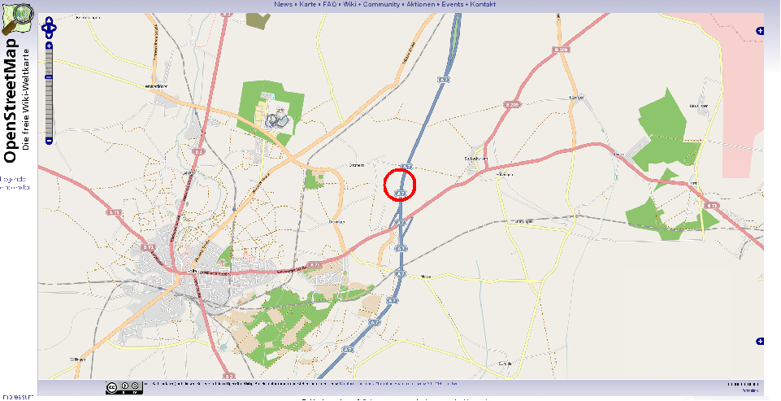
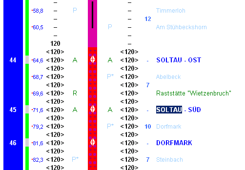

Metrische Verortung
Ein System der systematischen Identifikation geographischer Orte haben wir mit den Postleitzahlen bereits kennen gelernt. Stellen wir uns nun folgenden Sachverhalt vor (Abbildung 26):

Abbildung 26: Pannenort nördlich von Holtau (GIS.MA 2009)Während der Zustellung des Briefes in Flensburg bleibt der Post-LKW auf der Bundesautobahn 7 liegen. Mit seinem mobilen Telefon steckt der Fahrer gerade im Funkloch und muss (natürlich nach Absicherung der Pannenstelle) zu Fuß zu einer Meldesäule. Auf seinem Weg läuft er an einem kleinen blauen Schild vorbei, auf dem 64,0 zu lesen ist. Angekommen an der Meldesäule gibt er seine Panne bekannt, gibt die Auskunft, dass sich das Pannenfahrzeug kurz hinter Kilometer 64,0 in Fahrtrichtung Nord hinter der Anschlussstelle Soltau befindet und die rechte Fahrspur blockiert. Wenig später hören Sie im Verkehrsfunk:
„1,5 km Stau zwischen der Anschlussstelle Soltau und der Anschlussstelle Bispingen wegen eines defekten LKW. Die rechte Fahrspur ist blockiert. Bitte fahren Sie vorsichtig“
Dieses alltägliche Beispiel verdeutlicht die Kombination aus Namen und metrischer eindimensionaler Positionsangabe als geographischem Verortungssystem. Da Sie die Autobahn unterwegs nicht verlassen können orientieren Sie sich von Ausfahrt zur Ausfahrt (Namen oder Ausfahrtskennziffer). Ihnen genügt daher die Information des Verkehrsfunks für eine ausreichend genauen Verortung des Staus.
Der Polizei oder dem Pannendienst genügt diese Angabe nicht. Sie hätten gerne z.B. zur Organisation der Bergung bzw. zur Einschätzung der Gefahren die Kilometerangabe. Die Kilometrierung ist eine metrische Ortsangabe, die nur eine Dimension benötigt, da sie auf einer eindeutig definierten Strecke angeordnet ist. Ein solches Verortungskonzept ist metrisch also quantitativ. Es misst von einem definierten Ursprung/Start die Entfernung bis zum Zielpunkt/-ort. Diese sogenannte Lineare Referenzierung kann nur auf eindimensionale Geoobjekte Anwendung finden. Von diesen gibt es eine Vielzahl in unserem Alltag. Angefangen bei Autobahnen oder Gleisanlagen bis hin zu Rohr- und Versorgungsleitungen sind alle linearen, als Netzwerke ausgeprägten Strukturen linear referenzierbar.
Lineare Referenzen sind immer topologisch korrekt und können immer in geometrisch eindimensional messbaren Entfernungen angeben werden.
Was ist eine lineare Referenzierung?
Versuchen Sie diesen Zusammenhang zu rekapitulieren und verschaffen Sie sich einen Überblick über die Pannensituation bzw. die Ortslage. Navigieren Sie mit Google Earth zum Schauplatz. Betrachten Sie nun die nachfolgende Abbildung 27. Sie zeigt exakt die gleichen Raum.

Abbildung 27: Auszug der Linienkarte der BAB 7 im Bereich der Anschlussstelle Soltau. Mit freundlicher Genehmigung von: (Scholl 2009)Navigieren Sie nun zur Linienkarte der BAB 7 und analysieren die Art der metrischen Verortung. Nutzen Sie die Legende, um die Fülle an räumlich verorteter Information nachzuvollziehen.
Bearbeiten Sie...
- Welches Datenmodell würden Sie für eine lineare Referenzierung bevorzugen?